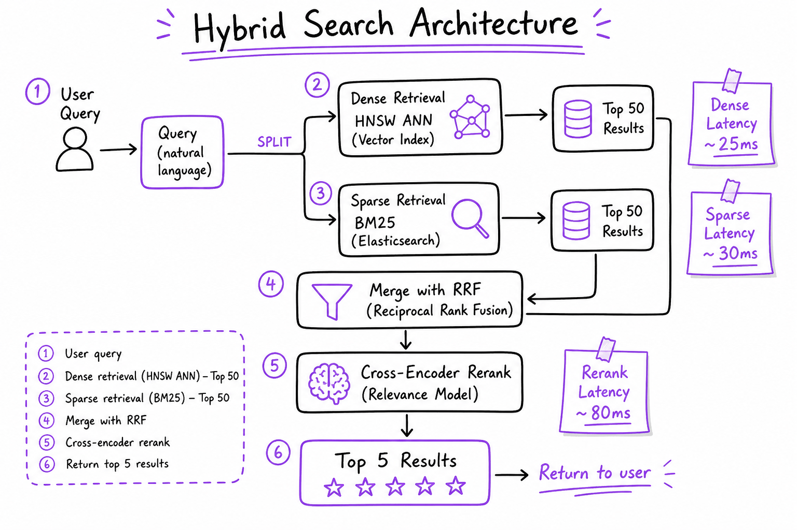
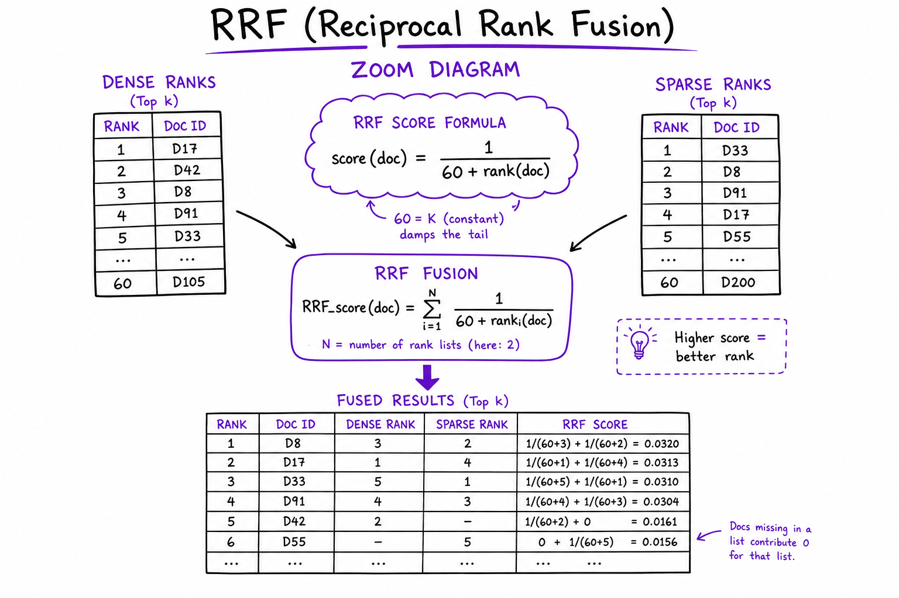
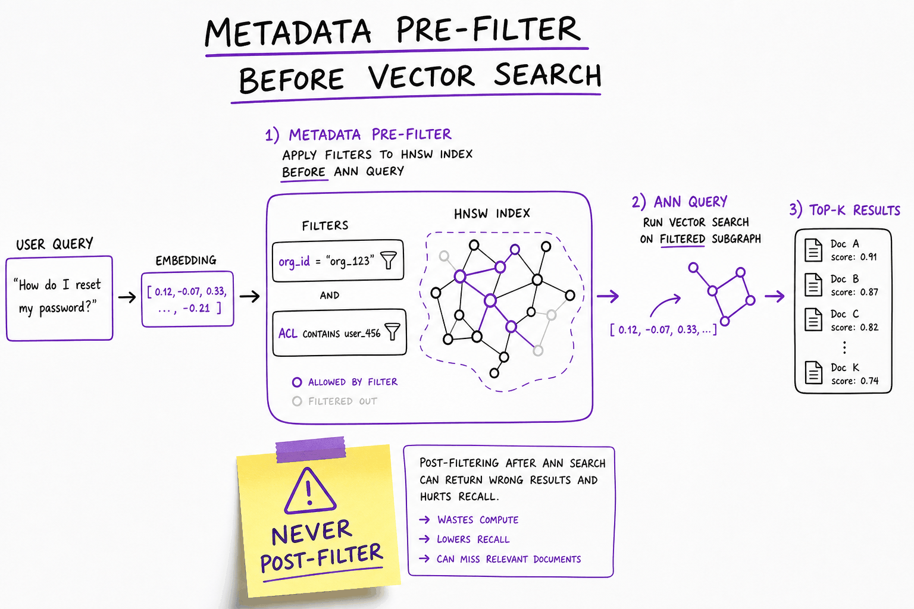

Hybrid search & query understanding // Knowledge & RAG
BM25 plus vectors fused with RRF, query rewriting, decomposition and HyDE.
01 — At a glance
Combine dense vector search with sparse BM25: parallel retrieval, RRF fusion, metadata pre-filter, and cross-encoder rerank. Neither alone covers enterprise queries.

Hybrid retrieval architecture: query embed + BM25 tokenize in parallel, RRF merge top-50, cross-encoder rerank to top-5, metadata pre-filter before ANN.
02 — New words
| Word | Meaning |
|---|---|
| Lexical (sparse) retrieval | Finding documents by the words they contain. "Sparse" because a document is a vector with one slot per vocabulary word, almost all zero. |
| Inverted index | A map from each word to the list of documents containing it (its postings list). It is what makes keyword search fast. |
| Term frequency (TF) | How many times a query word appears in a document. |
| Document frequency / IDF | How many documents contain a word; inverse document frequency turns that into a weight that is high for rare words. |
| BM25 | The standard lexical scoring formula: rare query words count most, repeats help with diminishing returns, long documents are discounted. |
| \(k_1\), \(b\) | BM25's two knobs: how fast repeated words saturate, and how strongly document length is normalised. |
| Stemming | Reducing words to a common root ("exporting", "exports" → "export") so variants match. |
| Hybrid search | Running lexical and dense (embedding) retrieval for the same query and merging the results. |
| Reciprocal rank fusion (RRF) | Merging ranked lists by summing \(1/(k + \text{rank})\) for each document across lists. Uses ranks only, never raw scores. |
| Score fusion | Merging by a weighted sum of normalised scores from each retriever. |
| Query rewriting | Using a model to turn the user's message into a better search query, for example a standalone question from a follow-up. |
| HyDE | Hypothetical document embeddings: have a model write a plausible answer, and search with the embedding of that answer instead of the question. |
| Learned sparse retrieval | Models (such as SPLADE) that output a sparse word-weight vector, including related words not in the text, searchable with an inverted index. |
The lesson
03 — The question
Embedding search finds passages that mean the same thing as the query in different words. Keyword search finds passages that contain the exact rare tokens the user typed. Each is blind where the other is strong, and real query traffic contains both kinds of question. Hybrid search runs both and merges the results; query understanding fixes the query itself before either retriever sees it.
Interviewers ask:
- Why not just use vector search? Give a query where it fails.
- How does BM25 score a document?
- How do you merge two result lists whose scores are on different scales? Why RRF?
- What can you do to the query before retrieval, and what does it cost?
The running example is the support assistant's help centre, reduced to eight passages so every score can be checked by hand:
| ID | Passage |
|---|---|
| d1 | Error E-4012: the export failed because the invoice has no tax ID. Add a tax ID and retry. |
| d2 | Exporting invoices to CSV: open Billing, select the invoices, and choose Export. |
| d3 | Refunds are issued to the original payment method within 30 days of purchase. |
| d4 | Error E-4007: payment declined. Ask the cardholder to contact their bank. |
| d5 | Troubleshooting export errors: most export failures are caused by missing invoice fields. |
| d6 | Annual plans can be cancelled at any time from the Billing page. |
| d7 | Scheduled exports send invoice reports to your email every Monday. |
| d8 | Invoice export formats: CSV, PDF and XLSX are supported. |
Two customer queries arrive:
- Q1: "error E-4012 when exporting invoices". The answer is d1, and only d1 says what E-4012 means.
- Q2: "how do I get my money back". The answer is d3, which shares no word with the question.
04 — Step 1: each retriever fails on the other's queries
Dense retrieval on Q1. An embedding model reads "error E-4012 when exporting invoices" as "some export error about invoices". It has never learned what E-4012 means (the code is specific to this product), so the code contributes almost nothing to the vector. Every passage about export errors is close: d5 ("troubleshooting export errors") is the most typical, so it tends to rank first, with d2, d1 and d8 not far behind. The one passage that answers the question can easily land at rank 3 or 4, behind generic material. Worse, d4 is about a different error code; to an embedding, E-4012 and E-4007 look nearly the same.
Lexical retrieval on Q2. After removing stop words, Q2 is "money back". No passage contains either word, so BM25 returns nothing at all. This is the vocabulary mismatch problem from embeddings.
The pattern generalises. Lexical retrieval wins on identifiers (error codes, SKUs, ticket numbers, version strings), names, rare jargon and exact phrases. Dense retrieval wins on paraphrase, vague descriptions, other languages and questions phrased as needs. Support, legal, medical and engineering queries mix both constantly, which is why hybrid search is the default in production RAG rather than an optimisation.
05 — Step 2: how BM25 scores a document
BM25 scores document \(D\) for query \(Q\) by adding up a contribution for each query term \(t\) that appears in \(D\):
\[ \text{BM25}(D, Q) = \sum_{t \in Q} \text{IDF}(t) \cdot \frac{f(t, D)\,(k_1 + 1)}{f(t, D) + k_1 \left(1 - b + b \,\frac{|D|}{\text{avgdl}}\right)} \]where \(f(t, D)\) is how many times \(t\) occurs in \(D\), \(|D|\) is the document's length in tokens, and avgdl is the average length. Three ideas are packed in.
Rare words matter most. \(\text{IDF}(t) = \ln\!\left(\frac{N - n_t + 0.5}{n_t + 0.5} + 1\right)\), where \(N\) is the number of documents and \(n_t\) the number containing \(t\). In our eight passages, "e-4012" appears in one: \(\ln(7.5/1.5 + 1) = \ln 6 = 1.792\). "Export" appears in five: \(\ln(3.5/5.5 + 1) = 0.492\). At real scale the gap is far wider: in 30,000 chunks, a code appearing in 2 has IDF 9.39, while "export" in 600 has 3.91.
Repeats help, with diminishing returns. With \(k_1 = 1.2\), the term-frequency factor \(f(k_1+1)/(f + k_1)\) for a document of average length is 1.000 for one occurrence, 1.375 for two, 1.571 for three, 1.774 for five, 1.964 for ten, approaching a ceiling of \(k_1 + 1 = 2.2\). A page cannot win by repeating "export" fifty times.
Long documents are discounted. With \(b = 0.75\), a document twice the average length has its denominator raised: one occurrence scores \(2.2 / (1 + 2.1) = 0.71\) instead of 1.0. A long page mentions many words by chance; a short one that contains the word is more likely to be about it.
Worked for d1 and Q1. Tokenised, stop-word-filtered and stemmed, Q1 is [error, e-4012, export, invoice]. d1 has 11 tokens, the average is 8.25, so the length part is \(1.2 \times (0.25 + 0.75 \times 11/8.25) = 1.5\). Each query term appears once, so each contributes \(\text{IDF} \times 2.2/2.5 = 0.88 \times \text{IDF}\):
| Term | IDF | Contribution |
|---|---|---|
| e-4012 | 1.792 | 1.577 |
| error | 0.944 | 0.831 |
| export | 0.492 | 0.433 |
| invoice | 0.492 | 0.433 |
| Total | 3.275 | |
The full BM25 ranking for Q1 is d1 (3.275), d5 (2.046), d2 (1.321), d8 (1.050), d7 (0.997). The rare code put the right passage first. Note d4, with the wrong code, scores below them: "e-4007" is a different token entirely.
Tokenisation decides what can match. Our tokeniser keeps "e-4012" as one token; one that split on hyphens would produce "e" and "4012", and match any passage containing "4012". Stemming lets "exporting" match "export". These choices are configuration in every search engine, and they matter most for exactly the identifiers that justify lexical search in the first place.
06 — Step 3: why lexical search is fast
BM25 does not scan documents. An inverted index stores, for every term, the list of documents containing it with their term counts, and the per-document lengths. A query touches only the postings lists of its own terms: for Q1, four lists. Rare terms have short lists, so the most informative terms are also the cheapest to read, and engines skip documents that cannot reach the current top \(k\). Lexical search over millions of documents runs in milliseconds, and the index updates incrementally as documents change.
This is the same index that powers Elasticsearch, OpenSearch, Lucene-based engines and Postgres full-text search. Many vector databases now include a BM25 index alongside the vector index, so both retrievers can run in one system and one query.
07 — Step 4: the fusion problem
Now we have two ranked lists for Q1:
- BM25: d1 (3.275), d5 (2.046), d2 (1.321), d8 (1.050), d7 (0.997)
- Dense: suppose the embedder returns d5 (0.82), d2 (0.80), d1 (0.79), d8 (0.77), d7 (0.74)
The scores cannot simply be added. BM25 scores are unbounded and depend on query length and corpus statistics: a four-term query scores higher than a two-term query for no reason related to relevance. Cosine scores sit in a narrow band (here 0.74 to 0.82) whose position depends on the embedding model. Adding them, the BM25 numbers dominate; and neither scale means the same thing from one query to the next. Two solutions are standard: fuse by rank, or normalise scores and weight them.
08 — Step 5: reciprocal rank fusion
RRF ignores scores and uses only positions. Each document receives, from each list it appears in,
\[ \text{RRF}(d) = \sum_{\text{lists } L} \frac{1}{k + \text{rank}_L(d)} \]with \(k = 60\) by convention. Documents missing from a list get nothing from it. For Q1:
| Doc | BM25 rank | Dense rank | RRF score |
|---|---|---|---|
| d5 | 2 | 1 | \(1/62 + 1/61 = 0.0325\) |
| d1 | 1 | 3 | \(1/61 + 1/63 = 0.0323\) |
| d2 | 3 | 2 | \(1/63 + 1/62 = 0.0320\) |
| d8 | 4 | 4 | \(2/64 = 0.0312\) |
| d7 | 5 | 5 | \(2/65 = 0.0308\) |
Why this shape works:
- No calibration needed. Ranks are comparable across retrievers even when scores are not, so RRF works out of the box with any pair of retrievers and needs no training data.
- Agreement wins. A document near the top of both lists beats one that is first in one list and absent from the other: rank 1 in one list alone gives \(1/61 = 0.0164\), less than rank 30 in both (\(2/90 = 0.0222\)).
- \(k\) flattens the top. With \(k = 60\), rank 1 is worth 0.0164 and rank 5 is worth 0.0154: the fused order is decided mostly by agreement, not by small differences in position. A smaller \(k\) gives the top positions more weight.
Look at the outcome honestly: d1, the answer, is second, a hair behind d5. RRF did not "pick" the right answer; it produced a good candidate set containing the best of both retrievers. That is the job of the fusion stage. Choosing between d5 and d1 requires reading the question and passage together, which is what a reranker does next.
For Q2, BM25 returns nothing, so RRF simply passes through the dense ranking, with d3 first. Fusion never makes the better retriever's list worse when the other has nothing to say.
09 — Step 6: weighted score fusion
The alternative normalises each list's scores to the range 0 to 1 (min-max scaling within the list) and combines them:
\[ s(d) = \alpha \cdot \hat s_{\text{dense}}(d) + (1 - \alpha) \cdot \hat s_{\text{sparse}}(d) \]With \(\alpha = 0.5\) on Q1, d1 gets \(0.5 \times 0.625 + 0.5 \times 1.0 = 0.813\) (its dense 0.79 is 62.5% of the way from 0.74 to 0.82), d5 gets 0.730, d2 0.446, d8 0.199, d7 0.0. Here the strong BM25 margin of d1 survives, and it comes first.
Score fusion keeps information RRF throws away (how much better the top result was), so a well-tuned \(\alpha\) can beat RRF. Its weaknesses: min-max scaling is distorted by outliers and by how many results each list returned; the bottom document always gets 0 and the top always 1, even when all are equally poor; and \(\alpha\) must be tuned on a golden set and may differ by query type. A practical approach: start with RRF; switch to score fusion only if a tuned \(\alpha\) wins clearly on your evaluation, and consider making \(\alpha\) depend on the query (more lexical weight when the query contains a code or quoted phrase).
Learned sparse retrieval is a third option worth knowing. Models such as SPLADE output a weight per vocabulary word, including words not in the text (a passage about refunds also gets weight on "money" and "reimbursement"). The result is still sparse, so it is served from an inverted index, but it closes part of the vocabulary gap. In a hybrid system it usually takes BM25's slot (or sits beside it), with dense retrieval still running alongside; it costs a model forward pass per document at indexing and per query at search time, which BM25 does not.
10 — Step 7: fixing the query before retrieval
Both retrievers assume the query is a good description of what is needed. Often it is not, and a language model call before retrieval can repair it. Four techniques, each aimed at a specific failure:
Conversational rewriting. In a chat, the second message is "what about enterprise?". Embedded alone, it matches nothing useful. A small model rewrites it, using the conversation, into a standalone question: "Can enterprise customers get a refund after 30 days?". This is the one rewrite almost every chat-based RAG system needs.
Multi-query expansion. Generate three to five paraphrases of the question, retrieve for each, and fuse all the lists with RRF. It widens recall for vague or oddly worded questions at the cost of several retrievals.
Decomposition. "Which plans include SSO, and what do they cost per seat?" needs two retrievals (SSO availability, per-seat pricing). Split into sub-questions, retrieve for each, and pass all results on. Questions that need a chain of lookups belong to agentic retrieval; see agentic RAG.
HyDE. Questions and answers look different: short and interrogative versus long and declarative. HyDE asks a model to write a hypothetical answer ("Refunds are available within 30 days of purchase and are returned to the original payment method..."), embeds that, and searches with it. The fake answer may be wrong in its facts, but it is shaped like the passages being searched, so it lands near them. It helps most when the embedding model is weak on question-to-passage matching; it can hurt when the model invents a confident answer in the wrong direction, or for identifier queries, where it dilutes the code with generic prose.
Extracting filters and routing. "Refund rules for annual plans updated this year" contains a filter (plan type = annual, date ≥ January 1) that is better applied as metadata than left to similarity. A model can extract structured filters, or route the query to the right index (billing docs versus API docs).
Each technique costs an LLM call before retrieval can start. With a small, fast model, that is on the order of a few hundred milliseconds and a fraction of a cent per query (order of magnitude), often the largest single latency item in the retrieval path. Apply rewriting where needed (follow-up messages, very short queries), not on every query by default, and measure the gain on the golden set.
11 — Step 8: putting the retrieval stage together
user message (+ conversation)
-> [optional] rewrite / expand / extract filters (LLM, ~100s of ms)
-> BM25 top 50 || dense top 50 (in parallel, ~10-30 ms each)
both with the same metadata filters (tenant, ACL, language)
-> RRF fuse, deduplicate (< 1 ms)
-> rerank top 50 -> keep 5 to 8 (see reranking)
Three details that interviewers check:
- Run both retrievers in parallel. Stage latency is the slower of the two, not the sum.
- Apply filters to both. A permission or tenant filter applied only to the vector side leaks restricted documents through the keyword side.
- Retrieve deeper than you keep. Each retriever returns 20 to 100 candidates, because fusion and reranking need material to work with; recall at this depth is the number to measure (see choosing an embedding model for the metrics).
12 — Settings that work as a starting point
| Setting | Start with | Tune when |
|---|---|---|
| BM25 \(k_1\), \(b\) | 1.2, 0.75 (engine defaults) | Rarely; very short documents (titles, FAQs) may want lower \(b\). |
| Tokeniser | Keep codes like "E-4012" whole; stemming on for prose | Identifiers are split or fail to match. |
| Candidates per retriever | 50 | Recall@50 is low: go deeper; latency is high: go shallower. |
| Fusion | RRF, \(k = 60\) | A tuned \(\alpha\) wins clearly on the golden set. |
| Query rewriting | Only for follow-up turns | Golden-set slices (vague or multi-part questions) show gains. |
13 — In code: BM25 and two kinds of fusion from scratch
Pure Python; reproduces every number in Steps 2, 5 and 6. The dense list is given, standing in for an embedding model:
import math, re from collections import Counter DOCS = { "d1": "Error E-4012: the export failed because the invoice has no tax ID. Add a tax ID and retry.", "d2": "Exporting invoices to CSV: open Billing, select the invoices, and choose Export.", "d3": "Refunds are issued to the original payment method within 30 days of purchase.", "d4": "Error E-4007: payment declined. Ask the cardholder to contact their bank.", "d5": "Troubleshooting export errors: most export failures are caused by missing invoice fields.", "d6": "Annual plans can be cancelled at any time from the Billing page.", "d7": "Scheduled exports send invoice reports to your email every Monday.", "d8": "Invoice export formats: CSV, PDF and XLSX are supported.", } STOP = {"the", "a", "an", "to", "and", "of", "is", "are", "by", "has", "no", "when", "how", "do", "i", "my", "from", "at", "any", "can", "be", "their", "most", "because", "within", "get", "your"} def stem(t): # crude: exporting -> export, invoices -> invoice for suffix in ("ing", "s"): if len(t) > len(suffix) + 3 and t.endswith(suffix): return t[: -len(suffix)] return t def tokenize(text): # keeps codes like "e-4012" as one token return [stem(t) for t in re.findall(r"[a-z0-9]+(?:-[a-z0-9]+)*", text.lower()) if t not in STOP] class BM25: def __init__(self, docs, k1=1.2, b=0.75): self.k1, self.b = k1, b self.tf = {d: Counter(tokenize(t)) for d, t in docs.items()} self.len = {d: sum(c.values()) for d, c in self.tf.items()} self.avgdl = sum(self.len.values()) / len(docs) df = Counter(term for c in self.tf.values() for term in c) n = len(docs) self.idf = {t: math.log((n - m + 0.5) / (m + 0.5) + 1) for t, m in df.items()} def score(self, query, d): s = 0.0 for t in tokenize(query): f = self.tf[d].get(t, 0) if f: s += self.idf[t] * f * (self.k1 + 1) / (f + self.k1 * (1 - self.b + self.b * self.len[d] / self.avgdl)) return s def search(self, query, k=5): hits = sorted(((self.score(query, d), d) for d in self.tf), reverse=True) return [(d, round(s, 3)) for s, d in hits[:k] if s > 0] def rrf(rankings, k=60): fused = Counter() for ranking in rankings: for rank, d in enumerate(ranking, 1): fused[d] += 1 / (k + rank) return [(d, round(s, 4)) for d, s in fused.most_common()] def minmax_fusion(sparse, dense, alpha=0.5): """alpha * dense + (1 - alpha) * sparse, each min-max scaled to [0, 1]; missing = 0.""" def scale(scores): lo, hi = min(scores.values()), max(scores.values()) return {d: (s - lo) / (hi - lo) for d, s in scores.items()} s, v = scale(sparse), scale(dense) fused = {d: alpha * v.get(d, 0) + (1 - alpha) * s.get(d, 0) for d in set(s) | set(v)} return sorted(((d, round(x, 3)) for d, x in fused.items()), key=lambda p: -p[1]) bm25 = BM25(DOCS) q1 = "error E-4012 when exporting invoices" print("tokens:", tokenize(q1)) print("idf:", {t: round(bm25.idf[t], 3) for t in tokenize(q1)}) sparse = bm25.search(q1) print("BM25:", sparse) dense = [("d5", 0.82), ("d2", 0.80), ("d1", 0.79), ("d8", 0.77), ("d7", 0.74)] # suppose the embedder returns this print("RRF:", rrf([[d for d, _ in sparse], [d for d, _ in dense]])) print("min-max, alpha 0.5:", minmax_fusion(dict(sparse), dict(dense))) print("BM25 for 'how do I get my money back':", bm25.search("how do I get my money back"))
Expected output: BM25 puts d1 first at 3.275; RRF gives d5 0.0325, d1 0.0323, d2 0.0320; min-max fusion gives d1 0.813, d5 0.730; and BM25 returns an empty list for the money-back query.
Quick reference
14 — What & Why
Dense finds paraphrases; sparse finds exact tokens (SKUs, error codes). Enterprise RAG needs both.
NFR
- Recall@5 >95% on golden set
- Retrieve stage <50ms p99
- Pre-filter by org_id/ACL before ANN
15 — Core Concepts
| Term | Definition | Gotcha |
|---|---|---|
| Bi-encoder | Separate query/doc embeddings | Fast but shallow |
| BM25 | Lexical TF-IDF ranking | Misses paraphrases |
| RRF | Merge ranks: 1/(k+rank) | k=60 typical |
| Pre-filter | Metadata filter before ANN | Post-filter leaks tenants |
16 — API Surface
POST /v1/search/hybrid
{ query, org_id, filters, top_k: 50, fusion: "rrf" }
-> { results: [{ chunk_id, dense_rank, sparse_rank, rrf_score }] }
retrieval.hybridSearch(q, filters, top_k=50)
rerank.scorePairs(q, chunks) -> top 517 — When to Use / When NOT
| Mode | Use When | Skip When |
|---|---|---|
| Hybrid | Enterprise mixed queries | Pure conversational FAQ |
| Dense-only | Paraphrase-heavy, no SKUs | Legal codes, product IDs |
| Sparse-only | Exact identifier lookup | Natural language questions |
18 — Architecture
Query -> [Embed -> HNSW top-50] parallel [BM25 -> ES top-50]
-> RRF merge -> Cross-encoder rerank top-5 -> Context19 — Deep Dive: RRF

RRF score calculation merging dense and sparse rank lists
score_rrf(d) = sum 1/(k + rank_L(d)) # k=60 # doc rank 1 dense + rank 8 sparse -> high fused score
20 — Deep Dive: Weighted Fusion
score = α·dense + (1-α)·sparse. Tune α on dev set. RRF is more robust when score scales differ.
21 — Deep Dive: Parallel Retrieve
Fire dense + sparse concurrently (asyncio/gRPC). Merge latency = max(dense, sparse) not sum. Target <40ms combined.
22 — Deep Dive: Pre-filter

Metadata pre-filter by org_id and ACL before HNSW ANN search
Pinecone namespace, pgvector WHERE, Weaviate tenant filter. Never post-filter after ANN.
23 — Deep Dive: Query Routing
Not every query needs the same blend of keyword and vector search.
- A small classifier or rules spot exact-token queries (SKUs, error codes, IDs) and send them to a sparse-heavy blend (α around 0.3).
- Conversational, paraphrased questions go dense-heavy.
- Routing saves load on whichever index a query does not need, and often improves recall on both kinds.
- Tune the routing threshold on the golden set, like any other knob.
More detail
24 — Query understanding
- Rewrite conversational follow-ups into standalone queries ("what about its default?" → "default value of Kafka consumer auto.offset.reset").
- Decompose multi-part questions into sub-queries, retrieve for each.
- Extract filters (date range, product, version) into structured metadata filters.
- HyDE: embed a hypothetical answer instead of the question, closer in embedding space to real answers.
25 — Hybrid search and reciprocal rank fusion
Dense embeddings catch paraphrase; BM25 catches exact tokens (error codes, IDs, config keys, names). Run both and fuse by rank, which needs no score normalization:
RRF(d) = Σ_lists 1 / (k + rank_list(d)), k ≈ 60
-- Postgres: pgvector + full-text search, fused with RRF
WITH v AS (
SELECT id, ROW_NUMBER() OVER (ORDER BY embedding <=> $1) AS r
FROM chunks ORDER BY embedding <=> $1 LIMIT 50),
k AS (
SELECT id, ROW_NUMBER() OVER (ORDER BY ts_rank_cd(tsv, q) DESC) AS r
FROM chunks, plainto_tsquery('english', $2) q
WHERE tsv @@ q ORDER BY ts_rank_cd(tsv, q) DESC LIMIT 50)
SELECT id, SUM(1.0 / (60 + r)) AS score
FROM (SELECT * FROM v UNION ALL SELECT * FROM k) u
GROUP BY id ORDER BY score DESC LIMIT 20;
In production
26 — Production & Ops
- Trace dense_ms, sparse_ms, fusion_ms separately
- A/B dense-only vs hybrid on Recall@5
- Cache frequent query embeddings
28 — Where people get lost
- Dense-only missing 20–35% enterprise queries
- Post-filter ACL after ANN
- Not normalizing query length for BM25
- Skipping rerank after hybrid merge
- "Embeddings understand everything, so keyword search is obsolete." They blur identifiers and rare names. Error codes, SKUs and product names are where BM25 is irreplaceable.
- Adding raw BM25 and cosine scores. They are on unrelated scales; BM25 dominates and the sum means nothing. Fuse by rank, or normalise and weight.
- Expecting fusion to choose the answer. Fusion builds a good candidate set; a reranker orders it.
- Ignoring the tokeniser. If "E-4012" is split into "e" and "4012", lexical search loses the very matches it exists for.
- Filtering only one side. Tenant and permission filters must apply to both retrievers, or the keyword path leaks documents.
- Rewriting every query with an LLM by default. It adds hundreds of milliseconds and can drift from what the user asked. Use it where it measurably helps, starting with follow-up messages.
- Using HyDE for identifier queries. The invented answer drowns the code in generic prose. Keep lexical retrieval on the original text.
29 — How this connects
Builds on
- Embeddings — Turning meaning into numbers: dense vectors, cosine similarity, sentence embeddings and contrastive training.
- Choosing an embedding model — Model families, dimensions, benchmarks, cost, and when to fine-tune or switch.
- Vector search & databases — Exact and approximate nearest neighbours, HNSW and IVF, and choosing a vector database.
- The RAG pipeline — Retrieve, augment, generate: every stage from a question to a grounded, cited answer.
Where this shows up later
- Reranking — Cross-encoder rerankers: retrieve wide, rescore, keep the best few.
- Making RAG good & measuring it — Advanced RAG, a production RAG chatbot design, retrieval and answer metrics, freshness, ACLs, latency, injection.
- LangChain — Chains, runnables, retrievers and the integrations layer.
- LlamaIndex — Data-first RAG framework: loaders, indexes, query engines.
- pgvector — Vector search inside Postgres: HNSW/IVFFlat, hybrid with full-text, operations.
- Pinecone — Managed serverless vector database: namespaces, metadata filters, hybrid.
- Weaviate — Open-source vector database with modules, hybrid search and multi-tenancy.
- Chroma — Lightweight embedded vector store for prototypes and local RAG.